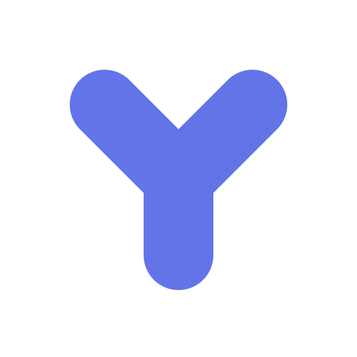

YBM, replayed
Each replay is drawn from a saved run: the messages, file names, numbers and real-time clock come from the run's log, and the
page in Build is the file the run wrote. Model: Qwen3.5 9B (4-bit, llama.cpp) on an 8 GB laptop GPU, November 19, 2026.
Waiting is shown faster, with the speed on screen.
The repository ·
What was measured, and what failed ·
The tour video